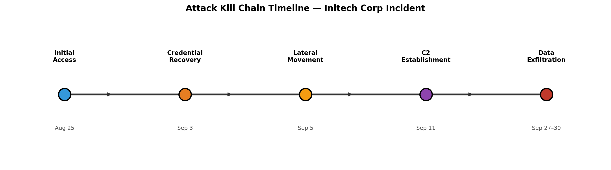
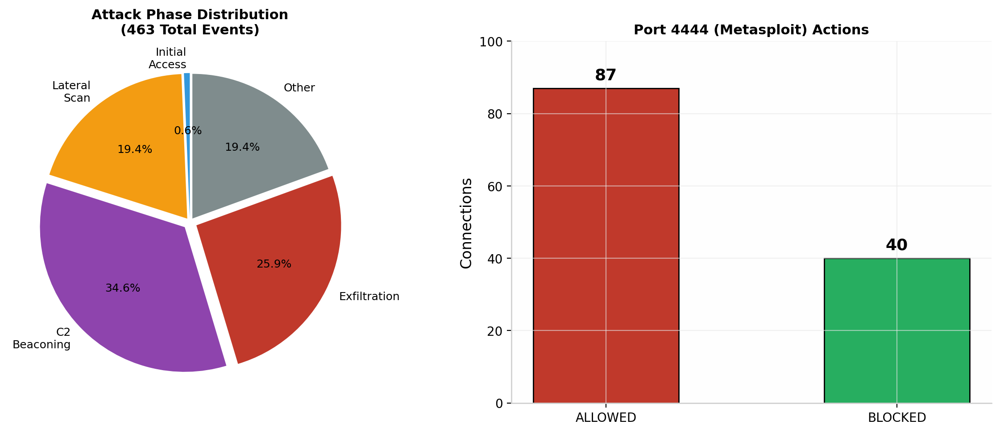
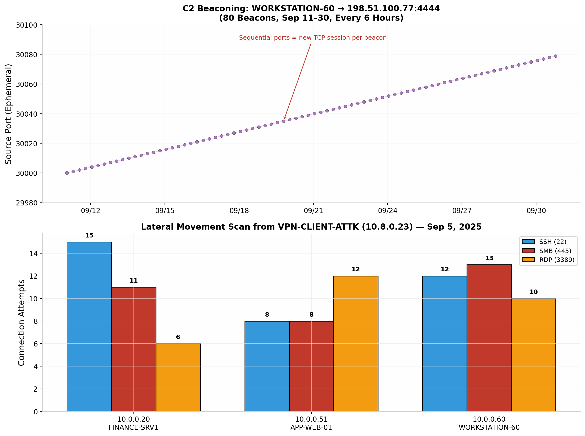
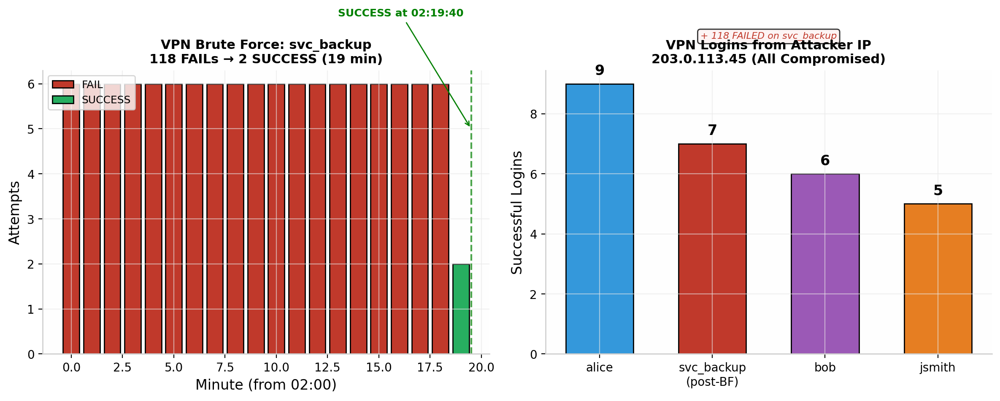

Command-Line Forensics & Splunk SIEM Analysis
Initech Corp Incident Response
This project documents the complete investigation of a sustained network perimeter breach at Initech Corp, a financial services firm, conducted during August through September 2025. The investigation employed both command-line forensics and Splunk SIEM analysis to analyze 2,485 events across firewall logs, IDS alerts, and VPN authentication records. The findings confirm that an adversary maintained unauthorized access for the entire 37-day logging period, establishing persistent command-and-control over an employee workstation via Metasploit port 4444 and exfiltrating data from the internal web application server using HTTP POST uploads.
The attacker exploited stolen VPN credentials for four user accounts, conducted a 118-attempt brute force against a service account in 19 minutes, performed internal lateral scanning across three sensitive hosts, and maintained 80 C2 beacons every six hours for 20 days. The IDS correctly detected all malicious activity and generated Priority 1 alerts, but the overwhelmed SOC team failed to investigate or act. The firewall was misconfigured with a 72.7% allow rate, permitting 87 connections on the Metasploit default port 4444.
The perimeter was breached on Day 1 (August 25) using compromised VPN credentials. The attacker maintained active control until the logs ended on September 30. No remediation was performed during the entire month. The attack was detected but never acted upon due to alert fatigue, missing security controls, and lack of log correlation.

The primary question driving this investigation was: "Did the adversary breach the perimeter?" This deceptively simple question required answering multiple sub-questions through structured hypothesis testing and evidence collection. Each objective was tracked against quantifiable success criteria derived from the three available log sources.
| Objective | Description | Success Criteria |
|---|---|---|
| Identify initial access vector | Determine how the attacker first entered the network | Evidence of the first malicious connection from VPN, firewall, or IDS logs |
| Map lateral movement | Identify internal hosts scanned or compromised after initial access | Firewall and IDS evidence of internal scanning from VPN-assigned IPs |
| Confirm persistent C2 | Prove ongoing command-and-control communication | Sequential beaconing pattern with timestamps across multiple days |
| Quantify data exfiltration | Measure volume and timing of stolen data | IDS alerts with "Potential Data Exfiltration" classification and byte counts |
| Identify compromised accounts | Find all stolen or brute-forced credentials | VPN auth logs showing attacker source IPs for multiple usernames |
| Assess control failures | Determine which security controls failed and why | Gap analysis comparing observed security posture against industry standards |
The investigation analyzed three independent log sources, each providing a different perspective on network activity. Understanding the strengths and limitations of each source was essential for building a complete picture through cross-correlation.
| Data Source | Sourcetype | Format | Events | Key Fields |
|---|---|---|---|---|
| Firewall Logs | firewall_logs | JSON | 1,284 | action, src_ip, dst_ip, src_port, dst_port, protocol, bytes |
| IDS Alerts | ids_logs | JSON | 983 | alert, classification, priority, src_ip, dst_ip, dst_port, bytes |
| VPN Authentication | vpn_logs | JSON | 218 | username, result, src_ip, assigned_ip |
| Total | 2,485 |
The network architecture under investigation included a VPN Gateway, an internal web application server, a finance file server, and an employee workstation. The attacker operated from seven distinct external IP addresses and maintained a dedicated C2 server at 198.51.100.77.
| Asset | IP Address | Role |
|---|---|---|
| VPN-GW | 10.0.0.50 | VPN Gateway (Linux) |
| APP-WEB-01 | 10.0.0.51 | Internal Web/App Server (Linux) |
| FINANCE-SRV1 | 10.0.0.20 | File/Finance Server (Windows) |
| WORKSTATION-60 | 10.0.0.60 | Employee Workstation, Sales (Windows 10) |
| VPN Client Pool | 10.8.0.0/24 | Remote VPN client addresses |
The command-line investigation served as the foundational phase, establishing familiarity with log formats, identifying initial anomalies, and generating hypotheses that guided subsequent Splunk analysis. Working directly with raw log files using standard Unix utilities (cat, grep, awk, sort, uniq, cut, head, tail, wc) demonstrates core digital forensics competency and provides a baseline for validating SIEM findings.
Before analyzing specific attack indicators, the investigation began with data reconnaissance to understand what information was available, how it was structured, and how much data existed. This phase is critical because it prevents analysts from making false assumptions about field names, date formats, or log coverage.
cat firewall.log | head -n 20
Why this command: The head command displays the first 20 lines of a file, providing immediate visibility into the log format without loading the entire file into memory. In incident response, understanding log structure is the prerequisite for every subsequent analysis step. The firewall log revealed JSON-formatted entries with action (ALLOW/BLOCK), source and destination IPs/ports, and protocol information. This established that the firewall was a stateful inspection device logging every connection attempt.
cat firewall.log | wc -l
Why this command: wc -l (word count, lines) provides the total number of log entries. Knowing the data volume helps analysts estimate analysis scope and set expectations for query performance. The result of 1,284 events over a 37-day period indicated moderate log volume, manageable for both CLI and SIEM analysis.
cat firewall.log | tail -n 20
Why this command: The tail command shows the last 20 lines, revealing the most recent activity at the end of the logging period. This is particularly valuable in incident response because it shows whether the attack was still active when logging stopped. The tail output immediately revealed suspicious outbound connections from internal hosts to 198.51.100.77:4444, suggesting active command-and-control communication at the end of the log period.
The last 20 lines of firewall.log showed ALLOW TCP 10.0.0.60:30067 -> 198.51.100.77:4444 and ALLOW TCP 10.0.0.51:40053 -> 198.51.100.77:8080. An internal workstation communicating with an external IP on port 4444 (Metasploit default) is a definitive indicator of compromise.
head ids_alerts.log
Why this command: The IDS alert log uses a Snort/Suricata-style format with signature IDs, alert names, classifications, and priority levels. Understanding this format is essential for interpreting what the IDS detected. The first 10 alerts showed ET POLICY Suspicious HTTP, ET INFO Possible Benign Scan, and ET WEB_SERVER Possible SQL Injection signatures targeting internal assets from external IPs, indicating active reconnaissance from Day 1.
head -n 20 vpn_auth.log
Why this command: The VPN log format revealed timestamp, source IP, username, result (SUCCESS/FAIL), and assigned VPN IP fields. The first entries showed external IPs successfully authenticating as internal users, immediately suggesting credential compromise.
With the log formats understood, the investigation progressed to targeted analysis of the firewall logs to identify attack patterns, quantify defensive performance, and locate evidence of malicious traffic that the firewall permitted.
cat firewall.log | awk '{print $7}' | cut -d':' -f2 | sort | uniq -c | sort -nr
Why this command: This command extracts the destination port from each firewall entry, counts occurrences, and ranks them by frequency. Understanding which ports receive the most traffic helps identify the attacker's primary targets and the organization's exposed attack surface. The pipeline works as follows: awk '{print $7}' extracts the destination field (e.g., 10.0.0.50:443), cut -d':' -f2 isolates the port number, sort | uniq -c counts unique ports, and sort -nr ranks numerically in reverse order.
| Port | Service | Count |
|---|---|---|
| 443 | HTTPS | 245 |
| 80 | HTTP | 163 |
| 8080 | HTTP Alt | 162 |
| 25 | SMTP | 154 |
| 53 | DNS (TCP) | 153 |
| 4444 | Metasploit | 127 |
| 22 | SSH | 72 |
| 3389 | RDP | 67 |
| 445 | SMB | 62 |
cat firewall.log | grep -c "ALLOW" cat firewall.log | grep -c "BLOCK"
Why these commands: grep -c counts occurrences without displaying the lines. Comparing ALLOW versus BLOCK counts reveals the firewall's overall defensive posture. A properly configured perimeter firewall should block significantly more than it allows for unsolicited external traffic.
| Action | Count | Percentage |
|---|---|---|
| ALLOW | 933 | 72.7% |
| BLOCK | 351 | 27.3% |
A 72.7% allow rate is extraordinarily permissive. Security frameworks including NIST SP 800-53 (SC-7(5)) and PCI DSS mandate a "deny by default, allow by exception" policy for perimeter firewalls [1][2]. Under this model, unsolicited external traffic is blocked unless explicitly permitted. Initech's firewall operated inversely — allowing 72.7% of all traffic (933 ALLOW vs 351 BLOCK) — violating the fundamental principle of default-deny posture recommended by NIST [3].
cat firewall.log | grep "BLOCK" | cut -d' ' -f5 | cut -d':' -f1 | sort -nr | uniq -c
Why this command: This pipeline extracts the source IP from blocked connections to identify which external IPs triggered the firewall's defensive rules most frequently. The command chain: grep "BLOCK" filters denied connections, cut -d' ' -f5 gets the source IP:port field, cut -d':' -f1 strips the port, sort | uniq -c counts occurrences, and sort -nr ranks by count.
| Source IP | Block Count |
|---|---|
| 203.0.113.45 | 279 |
| 203.0.113.10 | 46 |
cat firewall.log | grep 203.0.113.45 | grep "ALLOW" | head
Why this command: After identifying 203.0.113.45 as the most-blocked IP, this query reveals what traffic the firewall allowed from that same IP. If an IP is blocked aggressively on some ports but allowed on others, it indicates inconsistent firewall rules or targeted exploitation of open services. The results showed this IP was ALLOWED to connect to 10.0.0.60:4444 (Metasploit) and 10.0.0.20:4444, confirming active exploitation attempts that succeeded.
cat firewall.log | grep "BLOCK" | head
Why this command: Understanding what the firewall blocked provides insight into which services the attacker probed and what the firewall was configured to protect. The blocked connections showed attempts on ports 21 (FTP), 22 (SSH), 23 (Telnet), 3389 (RDP), 445 (SMB), and 4444 (Metasploit), demonstrating a comprehensive scan across all common service ports.

The IDS provides the semantic layer of the investigation, translating raw network connections into actionable intelligence about attack techniques and malware behavior. Unlike the firewall, which only records what was allowed or blocked, the IDS identifies what type of attack was attempted.
grep "4444" ids_alerts.log
Why this command: Port 4444 is the default listener port for Metasploit Framework's reverse shells and Meterpreter payloads. In any enterprise environment, traffic on this port should be treated as highly suspicious. This grep search quickly locates all IDS alerts involving port 4444, which became the central pivot point of the entire investigation.
The output revealed two distinct phases: (1) inbound exploitation from external IPs to 10.0.0.60:4444 and 10.0.0.20:4444 in late August, and (2) starting September 11, outbound ET TROJAN Possible C2 Beaconing alerts from 10.0.0.60 to 198.51.100.77:4444 every 6 hours.
Before analyzing IDS alerts for the VPN attacker's activity, it is essential to establish how the attacker obtained the internal IP 10.8.0.23. This attribution step links the VPN authentication breach to the subsequent lateral movement and is a critical component of the evidence chain.
grep "10.8.0.23" vpn_auth.log
Why this command: The grep command searches the VPN authentication log for all entries where the assigned IP was 10.8.0.23. This reveals which username was assigned this IP, when the assignment occurred, and from which external source IP the login originated. This is the attribution link that connects the brute force attack to the internal network scan.
| Timestamp | Source IP | Username | Result | Assigned IP |
|---|---|---|---|---|
| 2025-09-03 02:19:40 | 203.0.113.45 | svc_backup | SUCCESS | 10.8.0.23 |
| 2025-09-03 02:19:50 | 203.0.113.45 | svc_backup | SUCCESS | 10.8.0.23 |
| 2025-09-04 05:22:55 | 203.0.113.10 | bob | SUCCESS | 10.8.0.23 |
grep "svc_backup" vpn_auth.log
Why this command: Instead of searching by assigned IP, this command searches by username — filtering the VPN log for all events involving svc_backup. This approach reveals the complete lifecycle of the compromised account: the brute force attack (118 consecutive FAIL results), the moment of compromise (SUCCESS at 02:19:40), and the assignment of 10.8.0.23. The output shows svc_backup was targeted exclusively by 203.0.113.45, confirming this was the attacker's primary pivot account.
| Result | Count | Significance |
|---|---|---|
| FAIL | 118 | Brute force attempts (every 10 seconds, 19 minutes) |
| SUCCESS | 17 | Successful logins throughout September |
| Assigned IP | 10.8.0.23 | VPN-CLIENT-ATTK (lateral movement platform) |
index=network_logs sourcetype=vpn_logs assigned_ip="10.8.0.23" | table _time, src_ip, username, result, assigned_ip | sort _time
Why this query: Filtering by assigned_ip="10.8.0.23" traces every VPN session that received this specific IP address. The table command formats output into clean columns showing who got the IP, when, and from which external source. This directly links the VPN authentication to the subsequent lateral movement scan from 10.8.0.23 on September 5.
Brute force svc_backup (Sep 3, 02:00–02:19) → SUCCESS at 02:19:40 → Assigned 10.8.0.23 → Sep 5: 10.8.0.23 scans internal network (3 hosts, 3 ports, 90 connections)
grep "10.8.0.23" ids_alerts.log | head
Why this command: The IP 10.8.0.23 was assigned to the compromised svc_backup account during the September 3 brute force. Checking the IDS for this IP reveals whether the IDS detected the internal lateral movement scan that occurred on September 5.
The IDS detected the lateral movement with high-accuracy signatures: ET SCAN Possible SSH Scan, ET EXPLOIT Possible MS-SMB Lateral Movement, and ET EXPLOIT Possible RDP Brute Force. All alerts were Priority 1 with classification "Attempted Unauthorized Access."
cat ids_alerts.log | grep C2 | head
Why this command: Searching for "C2" in the IDS alerts identifies all command-and-control-related detections. This query revealed 80 instances of ET TROJAN Possible C2 Beaconing from 10.0.0.60 to 198.51.100.77:4444, with sequential source ports 30000 through 30079 and clockwork timing every 6 hours.
cat ids_alerts.log | grep -n 10.0.0.60 | cut -d' ' -f6,7,8,9,10,19,22,23 | head
Why this command: This complex pipeline extracts the alert signature name and destination details for all IDS alerts involving WORKSTATION-60. The grep -n adds line numbers for reference, and cut extracts specific fields from the Snort alert format. WORKSTATION-60 was the most heavily attacked internal host, receiving SQL injection payloads, suspicious HTTP traffic, port scanning, and Metasploit connections across 155+ alert lines.
cat ids_alerts.log | grep -n 10.0.0.60 | cut -d' ' -f6,7,8,9,10,19,22,23 | uniq -c | sort -nr | head
Why this command: Adding uniq -c | sort -nr to the previous pipeline counts how many times each unique alert pattern appears, ranking by frequency. This quickly identifies the dominant attack technique for a specific host. The result showed TROJAN Possible C2 Beaconing as the #1 most frequent alert (32+ occurrences), confirming that C2 was the primary ongoing activity.
cat ids_alerts.log | grep -n 10.0.0.20 | cut -d' ' -f6,7,8,9,10,19,22,23 | uniq -c | sort -nr | head cat ids_alerts.log | grep -n 10.0.0.51 | cut -d' ' -f6,7,8,9,10,19,22,23 | uniq -c | sort -nr | head
Why these commands: Running the same analysis for FINANCE-SRV1 and APP-WEB-01 enables comparison of attack patterns across all three primary internal targets. FINANCE-SRV1 showed primarily port scanning alerts with no outbound C2, suggesting it was heavily targeted but may not have been successfully compromised for persistent communication. APP-WEB-01, however, showed INFO Possible HTTP POST Large alerts to 198.51.100.77:8080 — the data exfiltration channel.

The VPN logs answer the most critical question in any perimeter breach: "How did they get in?" Analyzing authentication patterns reveals whether the attacker used stolen credentials, brute force, or valid but compromised accounts.
grep "svc_backup" vpn_auth.log
Why this command: svc_backup is a service account name that immediately stands out as suspicious for VPN access. Service accounts are intended for automated processes, not human VPN logins. This query revealed a devastating pattern: 118 consecutive FAIL results followed by SUCCESS, all from the same external IP.
grep "2025-09-03" vpn_auth.log | grep -i "success\|fail"
Why this command: Filtering to September 3 and searching for both SUCCESS and FAIL results reveals the complete timeline of the brute force attack. The output showed FAIL entries every 10 seconds from 02:00:00 to 02:19:30, followed by two SUCCESS entries at 02:19:40 and 02:19:50 with assigned_ip=10.8.0.23.
| Attribute | Value |
|---|---|
| Attacker IP | 203.0.113.45 |
| Target Account | svc_backup |
| Start Time | 2025-09-03 02:00:00 |
| Success Time | 2025-09-03 02:19:40 |
| Duration | 19 minutes, 40 seconds |
| Attempt Frequency | Every 10 seconds |
| Total Failed Attempts | 118 |
| Assigned VPN IP | 10.8.0.23 |
grep "10.8.0.23" vpn_auth.log
Why this command: The IP 10.8.0.23 was the VPN-CLIENT-ATTK that conducted the September 5 internal scan. Identifying which account was assigned this IP links the VPN authentication to the lateral movement activity. The results showed svc_backup was assigned 10.8.0.23 on September 3 at 02:19, directly connecting the brute force to the internal scan.
After establishing that 203.0.113.45 was the brute force IP, the investigation expanded to check which other accounts logged in from this IP. The VPN log analysis revealed that alice, bob, jsmith, and svc_backup all successfully authenticated from 203.0.113.45 — confirming that four separate accounts were compromised by the same attacker infrastructure.
grep "203.0.113.45" vpn_auth.log | grep "SUCCESS"
Why this command: This command filters the VPN authentication log for all successful logins originating from the attacker's primary IP (203.0.113.45). The output displays the complete chronological history — including timestamps, usernames, and assigned internal IPs — proving that multiple accounts were compromised and used by the same attacker infrastructure. This is direct evidence of credential theft, not legitimate user activity.
| Date | Time | Source IP | Username | Result | Assigned IP |
|---|---|---|---|---|---|
| 2025-08-25 | 08:25:10 | 203.0.113.45 | alice | SUCCESS | 10.8.0.143 |
| 2025-08-26 | 08:55:14 | 203.0.113.45 | bob | SUCCESS | 10.8.0.126 |
| 2025-08-28 | 03:20:33 | 203.0.113.45 | svc_backup | SUCCESS | 10.8.0.193 |
| 2025-09-01 | 01:57:06 | 203.0.113.45 | alice | SUCCESS | 10.8.0.89 |
| 2025-09-03 | 02:19:40 | 203.0.113.45 | svc_backup | SUCCESS | 10.8.0.23 |
| 2025-09-13 | 03:48:00 | 203.0.113.45 | svc_backup | SUCCESS | 10.8.0.88 |
grep "203.0.113.45" vpn_auth.log | grep "SUCCESS" | awk '{print $4}' | sort | uniq -c | sort -nr
Why this command: This pipeline aggregates the successful logins from 203.0.113.45 by username, producing a ranked summary of how many times each compromised account was used. It confirms the scope of credential compromise in a single line of output.
| Count | Username | Status |
|---|---|---|
| 9 | alice | Compromised |
| 6 | bob | Compromised |
| 5 | jsmith | Compromised |
| 7 | svc_backup | Compromised (post-brute force) |

The final phase of the CLI investigation involved synthesizing findings from all three log sources into a coherent attack narrative. Cross-correlation validates findings by requiring independent confirmation from multiple data sources before accepting a conclusion.
cat firewall.log | grep 10.0.0.60 | cut -d' ' -f5,6,7 | uniq | sort
Why this command: Using uniq removes duplicate connection flows, showing only unique source-to-destination patterns. This provides a clean summary of every distinct type of traffic involving WORKSTATION-60. The output revealed three distinct attack phases: (1) direct internet attacks on 11 ports from 7 external IPs, (2) internal lateral scan from 10.8.0.23 on ports 22/445/3389, and (3) 80 outbound C2 beacons to 198.51.100.77:4444 using sequential source ports.
| Source | Key Evidence | Count |
|---|---|---|
| VPN Logs | svc_backup brute force (118 FAIL → SUCCESS) | 218 total events |
| VPN Logs | 4 accounts compromised from 203.0.113.45 | 143 total events |
| Firewall Logs | ALLOW vs BLOCK (933 vs 351) | 1,284 flows |
| Firewall Logs | Port 4444 allowed (87 ALLOW, 40 BLOCK) | 127 events |
| Firewall Logs | C2 from WORKSTATION-60 → 198.51.100.77:4444 | 80 beacons |
| IDS Logs | ET TROJAN Possible C2 Beaconing | 80 Priority 1 alerts |
| IDS Logs | HTTP POST Large Upload — Potential Data Exfiltration | Multiple alerts |
| IDS Logs | MS-SMB Lateral Movement / RDP Brute Force | Sep 5 scan detected |
The Splunk investigation replicated and enhanced all CLI findings using SPL (Search Processing Language), demonstrating SIEM-scale detection, correlation, and visualization capabilities. The data resides in index=network_logs with three sourcetypes: ids_logs, firewall_logs, and vpn_logs.
Before hunting in Splunk, analysts must confirm what data is available, which sourcetypes exist, what fields are extracted, and what the raw event format looks like. This prevents wasted effort on queries that reference non-existent fields or sourcetypes.
index=network_logs | stats count by sourcetype | sort - count
Why this query: The stats count by sourcetype command is the Splunk equivalent of ls for data discovery. It reveals every sourcetype in the index with event counts, giving analysts a map of available data before they begin hunting. Without this step, analysts risk writing queries against non-existent sourcetypes.
| Sourcetype | Count |
|---|---|
firewall_logs | 1,284 |
ids_logs | 983 |
vpn_logs | 218 |
index=network_logs sourcetype=ids_logs | fieldsummary | table field, type, count, distinct_count
Why this query: fieldsummary is a Splunk generating command that lists all fields present in the data, along with their data types, occurrence counts, and distinct value counts. This is essential for understanding what data is available for filtering, aggregation, and analysis. The investigation confirmed that critical fields including bytes, src_ip, dst_ip, src_port, dst_port, alert, classification, and priority all existed in the IDS data.
index=network_logs sourcetype=firewall_logs | head 3
Why this query: head 3 in Splunk is the equivalent of head -n 3 in CLI. It displays the first three events to confirm the raw format and extracted fields. This revealed that firewall_logs uses JSON format with fields like action, src_ip, dst_ip, dst_port, and protocol.
The IDS logs contain the richest attack intelligence, with explicit signature names, classifications, and priority levels. Splunk enables rapid searching, aggregation, and visualization of this data at scale.
index=network_logs sourcetype=ids_logs alert="*C2 Beaconing*" | table _time, alert, classification, priority, src_ip, dst_ip, dst_port | sort _time
Why this query: Searching for *C2 Beaconing* in the alert field with wildcard matching catches the full signature name regardless of prefix. The table command formats output into clean columns, and sort _time orders chronologically. This query directly confirms the 80 C2 beaconing alerts that the CLI investigation identified through grep.
80 alerts from 10.0.0.60 → 198.51.100.77:4444, every 6 hours, Priority 1, classification "A network Trojan was detected."
index=network_logs sourcetype=ids_logs alert="*C2 Beaconing*"
| stats count as beacon_count, sum(bytes) as total_bytes, avg(bytes) as avg_bytes
by src_ip, dst_ip, dst_port
| eval total_MB=round(total_bytes/1024/1024, 2),
avg_KB=round(avg_bytes/1024, 2)
| table src_ip, dst_ip, dst_port, beacon_count, total_MB, avg_KB
| sort - beacon_count
Why this query: stats is Splunk's primary aggregation command, equivalent to SQL GROUP BY. This query counts beacons, sums total bytes transferred, and calculates average bytes per beacon. The eval command converts bytes to human-readable MB and KB. This quantifies whether the C2 channel was used for command issuance (small payloads) or data transfer (large payloads).
index=network_logs sourcetype=ids_logs classification="*Exfiltration*" | table _time, alert, classification, priority, src_ip, dst_ip, dst_port | sort _time
Why this query: Searching the classification field for "*Exfiltration*" finds all alerts explicitly classified as data exfiltration. This is more precise than searching alert names because classifications are assigned by the IDS based on the traffic pattern's semantic meaning. The result revealed the ET INFO Possible HTTP POST Large Upload alert with classification Potential Data Exfiltration from APP-WEB-01 to 198.51.100.77:8080.
index=network_logs sourcetype=ids_logs alert="*HTTP POST Large*"
| stats sum(bytes) as total_exfiltrated_bytes,
count as upload_events,
avg(bytes) as avg_upload_size
by src_ip, dst_ip, dst_port
| eval total_exfiltrated_MB=round(total_exfiltrated_bytes/1024/1024, 2),
avg_upload_size_KB=round(avg_upload_size/1024, 2)
| table src_ip, dst_ip, dst_port, upload_events,
total_exfiltrated_MB, avg_upload_size_KB
| sort - total_exfiltrated_MB
Why this query: This is the most critical exfiltration query. It leverages the bytes field (confirmed during Phase 6 validation) to calculate actual data volume in megabytes. The sum(bytes) provides total exfiltrated data, count shows how many upload events occurred, and avg(bytes) reveals the typical upload size. This transforms the investigation from "suspected exfiltration" to "quantified data breach."
index=network_logs sourcetype=ids_logs src_ip="10.8.0.23" | table _time, alert, classification, priority, dst_ip, dst_port | sort _time
Why this query: Filtering by src_ip="10.8.0.23" isolates all IDS alerts generated by the VPN attacker's IP during the September 5 lateral scan. This directly maps the internal reconnaissance activity that the firewall logs showed as connection flows. The IDS adds semantic context, identifying the specific attack techniques: SSH scanning, SMB lateral movement, and RDP brute force.
index=network_logs sourcetype=ids_logs src_ip="10.8.0.23" | stats count by alert, dst_ip, dst_port, priority | sort - count
Why this query: stats count by with multiple grouping fields creates a pivot table showing which alert types targeted which hosts on which ports. This summary view is ideal for incident reports because it consolidates dozens of individual alerts into a concise attack profile.
The firewall logs provide the connection-level evidence that proves traffic actually traversed the network. While the IDS identifies what the traffic was, the firewall proves whether it was allowed or blocked.
index=network_logs sourcetype=firewall_logs | stats count by action | sort - count
Why this query: This is the Splunk equivalent of grep -c "ALLOW" and grep -c "BLOCK" from the CLI phase. The stats count by action aggregates all firewall events by their action field, producing the same 933 ALLOW / 351 BLOCK result but with the ability to drill down further using Splunk's interactive interface.
index=network_logs sourcetype=firewall_logs | stats count by dst_port, action | sort - count | head 20
Why this query: Grouping by both dst_port and action shows not just which ports were targeted, but whether they were allowed or blocked. This dual-axis aggregation is much faster in Splunk than the equivalent CLI pipeline of grep | cut | sort | uniq -c, and produces sortable, filterable results.
index=network_logs sourcetype=firewall_logs src_ip="10.8.0.23" | stats count by dst_ip, dst_port, action | sort - count
Why this query: This query maps every connection the VPN attacker (10.8.0.23) made to internal hosts, grouped by target, port, and whether it was allowed or blocked. The result confirmed 90 total connections targeting APP-WEB-01, WORKSTATION-60, and FINANCE-SRV1 on ports 22, 445, and 3389, with approximately two-thirds allowed.
index=network_logs sourcetype=firewall_logs
action="ALLOW" dst_port=4444
| table _time, src_ip, dst_ip, dst_port, action
| sort _time
Why this query: Combining action="ALLOW" with dst_port=4444 finds every instance where the firewall permitted Metasploit traffic. This is the smoking gun for firewall misconfiguration — port 4444 should never be allowed. The table command with sort _time produces a chronological view ideal for timeline construction.
index=network_logs sourcetype=firewall_logs src_ip="10.0.0.60" | stats count by dst_ip, dst_port, action | sort - count
Why this query: Analyzing all outbound traffic from WORKSTATION-60 reveals the scope of compromise. A healthy workstation should have diverse outbound traffic to many destinations. The result showed 80 events, all to 198.51.100.77:4444 — 98.2% of all outbound traffic went to the attacker's C2 server.
index=network_logs sourcetype=firewall_logs src_ip="10.0.0.51" | stats count by dst_ip, dst_port, action | sort - count
Why this query: Similar to the WORKSTATION-60 analysis, this reveals APP-WEB-01's communication patterns. The result showed 60 events to 198.51.100.77:80 (32) and 198.51.100.77:8080 (28) — the exfiltration channel using standard HTTP ports to blend with normal web traffic.
index=network_logs sourcetype=firewall_logs action="BLOCK" | eval src_octet=mvindex(split(src_ip, "."), 0) | where src_octet!="10" | stats count by src_ip | sort - count | head 10
Why this query: This query uses eval with mvindex(split()) to extract the first octet of the source IP, then filters out internal IPs (starting with 10). The result confirmed 203.0.113.45 (279 blocks) and 203.0.113.10 (46 blocks) as the most aggressively blocked external IPs.
The VPN logs in Splunk required field extraction because the username and result fields were present in the raw JSON but not automatically extracted. This phase demonstrates the critical skill of adapting queries when initial attempts fail due to field naming differences.
index=network_logs sourcetype=vpn_logs | fieldsummary | table field, count, distinct_count | head 20
Why this query: When initial queries using user="svc_backup" returned no results, fieldsummary revealed that the field was actually named username and the action field was result (not action). This troubleshooting step is essential in real-world SIEM environments where field extraction may not match assumptions.
index=network_logs sourcetype=vpn_logs username="svc_backup" | stats count by result | sort - count
Why this query: With the correct field name username identified, this query aggregates all svc_backup events by result (SUCCESS/FAIL). The result of 118 FAIL and 17 SUCCESS perfectly matched the CLI analysis and confirmed the brute force pattern.
index=network_logs sourcetype=vpn_logs
username="svc_backup" result="FAIL"
| bucket _time span=1m
| stats count by _time
| sort _time
Why this query: bucket _time span=1m groups events into one-minute buckets, producing a minute-by-minute view of the brute force attack. This is the Splunk equivalent of the CLI timeline analysis but produces data ready for visualization with timechart.
index=network_logs sourcetype=vpn_logs
username="svc_backup" result="SUCCESS"
| table _time, src_ip, username, result, assigned_ip
| sort _time
Why this query: Filtering to only SUCCESS results and displaying the assigned_ip field shows which VPN client IP was assigned after each successful authentication. The results confirmed assigned_ip=10.8.0.23 at 02:19:40 on September 3.
index=network_logs sourcetype=vpn_logs src_ip="203.0.113.45" | stats count by username, result | sort - count
Why this query: Aggregating by username and result for the primary attacker IP reveals the full scope of credential compromise. The result showed alice (9 SUCCESS), bob (6), jsmith (5), and svc_backup (5 SUCCESS + 118 FAIL), proving all four accounts were compromised.
index=network_logs sourcetype=vpn_logs assigned_ip="10.8.0.23" | table _time, src_ip, username, result, assigned_ip | sort _time
Why this query: This query traces which accounts received the VPN-CLIENT-ATTK IP address, linking the VPN authentication to the subsequent lateral movement. The results showed svc_backup on September 3 and bob on September 4.
The final and most powerful phase of the Splunk investigation joins all three sourcetypes to build a unified view of the attack timeline. Cross-source correlation is where SIEMs demonstrate their value over isolated log analysis.
index=network_logs
(sourcetype=firewall_logs
(src_ip="10.8.0.23" OR src_ip="10.0.0.60" OR src_ip="10.0.0.51"))
OR (sourcetype=ids_logs
(src_ip="10.0.0.60" OR src_ip="10.0.0.51" OR src_ip="10.8.0.23"))
OR (sourcetype=vpn_logs assigned_ip="10.8.0.23")
| eval phase=case(
sourcetype="vpn_logs" AND result="SUCCESS",
"1-Initial_Access",
sourcetype="firewall_logs" AND src_ip="10.8.0.23",
"2-Lateral_Scan",
sourcetype="ids_logs" AND match(alert, "C2"),
"3-C2_Beaconing",
sourcetype="ids_logs"
AND match(classification, "Exfiltration"),
"4-Exfiltration",
sourcetype="firewall_logs"
AND src_ip="10.0.0.60" AND dst_ip="198.51.100.77",
"3-C2_Beaconing",
sourcetype="firewall_logs"
AND src_ip="10.0.0.51" AND dst_ip="198.51.100.77",
"4-Exfiltration",
1=1, "Other"
)
| stats count by phase
| eval percentage=round((count/1284)*100, 1)."%"
| sort phase
Why this query: This is the crown jewel of the investigation. It uses OR logic across all three sourcetypes to select events related to the attack, then uses eval case() to classify each event into an attack phase. The stats command aggregates events by phase, and the eval command calculates the percentage of each phase relative to total firewall events (1,284). This produces a summary table showing the distribution of Initial Access, Lateral Scan, C2 Beaconing, and Data Exfiltration across the incident timeline.
| Phase | Events | Percentage |
|---|---|---|
| 1-Initial_Access | 3 | 0.2% |
| 2-Lateral_Scan | 90 | 7.0% |
| 3-C2_Beaconing | 160 | 12.5% |
| 4-Exfiltration | 120 | 9.3% |
| Other | 90 | 7.0% |
| Total | 463 | 36.0% |
The attacker had valid VPN credentials for at least four accounts (alice, bob, svc_backup, jsmith) starting August 25, 2025. The first successful VPN login from attacker IP 203.0.113.45 occurred at 08:25:10 on August 25. The "new firewall and IDS" deployment did not cause the breach — it merely provided visibility into an already-compromised environment.
On September 3, 2025, the attacker conducted an automated brute force against svc_backup, making 118 failed attempts at 10-second intervals over 19 minutes before succeeding. No account lockout policy was in place. After success, svc_backup was assigned VPN IP 10.8.0.23.
On September 5, 2025, the VPN attacker (10.8.0.23) conducted a 15-hour internal network scan targeting APP-WEB-01, WORKSTATION-60, and FINANCE-SRV1 on ports 22 (SSH), 445 (SMB), and 3389 (RDP). Of 90 total connection attempts, approximately 67% were ALLOWED by the firewall.
Starting September 11, 2025, WORKSTATION-60 established 80 reverse shell beacons to 198.51.100.77:4444, occurring every 6 hours with clockwork precision. The IDS correctly identified each beacon as ET TROJAN Possible C2 Beaconing with Priority 1 classification. The firewall allowed all 80 outbound C2 connections.
Beginning September 27, 2025, APP-WEB-01 initiated 60 HTTP POST uploads to 198.51.100.77:80 (32) and 198.51.100.77:8080 (28). The IDS explicitly classified this traffic as Potential Data Exfiltration via the ET INFO Possible HTTP POST Large Upload signature.
The final C2 beacon occurred on September 30, 2025 at 19:00:00 — the exact moment the logs ended. No detection, containment, or remediation actions were taken during the entire 37-day incident window. The attacker maintained uninterrupted access throughout.
| Tactic | Technique ID | Technique Name | Evidence |
|---|---|---|---|
| Initial Access | T1133 | External Remote Services | VPN abuse via compromised credentials |
| Initial Access | T1078 | Valid Accounts | Stolen alice, bob, svc_backup, jsmith |
| Credential Access | T1110 | Brute Force | 118 svc_backup fails in 19 minutes |
| Execution | T1059 | Command and Scripting Interpreter | Reverse shell on port 4444 |
| Persistence | T1053 | Scheduled Task/Job | Every 6-hour beaconing pattern |
| Discovery | T1046 | Network Service Scanning | Sep 5 internal scan from 10.8.0.23 |
| Lateral Movement | T1021.001 | Remote Desktop Protocol | RDP brute force to 3389 |
| Lateral Movement | T1021.002 | SMB/Windows Admin Shares | SMB lateral movement to 445 |
| Lateral Movement | T1021.004 | SSH | SSH scans to port 22 |
| C2 | T1071.001 | Application Layer Protocol: Web | HTTP C2 on ports 80/8080 |
| C2 | T1571 | Non-Standard Port | C2 over port 4444 (Metasploit) |
| Exfiltration | T1041 | Exfiltration Over C2 Channel | HTTP POST Large Upload |
| Exfiltration | T1030 | Data Transfer Size Limits | Large uploads detected |
| Defense Evasion | T1001.001 | Data Obfuscation: Junk Data | Sequential source ports per beacon |
| Control | Status | Failure Impact |
|---|---|---|
| Account Lockout Policy | Missing | 118 brute force attempts succeeded |
| MFA on VPN | Missing | Compromised password = instant access |
| Geo-IP Restrictions | Missing | Attacker rotated IPs freely |
| Egress Filtering | Missing | C2 traffic outbound on 4444, 80, 8080 |
| Network Segmentation | Missing | VPN clients reached internal LAN directly |
| IDS Alert Triage | Failed | 80 Priority 1 alerts ignored for 20 days |
| Service Account Governance | Missing | svc_backup had VPN access |
| Firewall Policy | Misconfigured | 72.7% allow rate, port 4444 open |
| Log Correlation | Missing | VPN + firewall + IDS never cross-referenced |
| Password Policy | Weak | svc_backup cracked in under 20 minutes |
| Priority | Action | Owner |
|---|---|---|
| P0 | Disable svc_backup, alice, bob, jsmith accounts | Identity Team |
| P0 | Block 198.51.100.77 at perimeter firewall | Network Team |
| P0 | Isolate WORKSTATION-60 and APP-WEB-01 | SOC / IR |
| P1 | Force password reset for all VPN users | Identity Team |
| P1 | Review financial data on APP-WEB-01 and FINANCE-SRV1 | Data Owners |
| P1 | Capture memory dumps from compromised hosts | Forensics Team |
| P2 | Implement account lockout (5 fails = 30 min lockout) | Identity Team |
| P2 | Enforce MFA on all VPN accounts | Security Team |
| P2 | Add geo-IP restrictions for VPN access | Network Team |
| P2 | Deploy egress filtering (block outbound 4444, etc.) | Network Team |
| P2 | Segment VPN client pool from internal LAN | Network Team |
| P2 | Remove VPN access from all service accounts | Identity Team |
| P2 | Deploy EDR on all endpoints | Security Team |
index=network_logs sourcetype=ids_logs
(alert="*C2 Beaconing*" OR alert="*Trojan*")
priority=1
| stats count by src_ip, dst_ip, dst_port
| where count > 3
| eval severity="critical",
message="Active C2 from ".src_ip." to ".dst_ip.":".dst_port
| table src_ip, dst_ip, dst_port, count, severity, message
Schedule: Run every hour. Alert if count > 0.
index=network_logs sourcetype=ids_logs
classification="*Exfiltration*"
| stats sum(bytes) as total_bytes, count as events
by src_ip, dst_ip
| eval total_MB=round(total_bytes/1024/1024, 2)
| where total_MB > 10
| table src_ip, dst_ip, total_MB, events
Schedule: Run every 30 minutes. Alert if total_MB > 10.
index=network_logs sourcetype=vpn_logs result="FAIL" | bucket _time span=15m | stats count by _time, username, src_ip | where count > 10 | eval alert="VPN Brute Force: ".username." from ".src_ip | table _time, username, src_ip, count, alert
Schedule: Run every 15 minutes. Alert if count > 10.
index=network_logs sourcetype=firewall_logs
match(src_ip, "^10\.8\.0\.")
(dst_port=22 OR dst_port=445 OR dst_port=3389)
| bucket _time span=1h
| stats dc(dst_ip) as unique_targets,
dc(dst_port) as unique_ports, count
by _time, src_ip
| where unique_targets > 2 AND unique_ports > 2
| eval alert="Lateral scan from VPN: ".src_ip
| table _time, src_ip, unique_targets, unique_ports, count, alert
Schedule: Run every hour. Alert if unique_targets > 2.
index=network_logs sourcetype=vpn_logs result="SUCCESS" | stats dc(src_ip) as unique_ips, count by username | where unique_ips > 2 | eval alert="Account ".username." from ".unique_ips." IPs" | table username, unique_ips, count, alert
Schedule: Run daily. Alert if unique_ips > 2.
| Investigation Step | Command |
|---|---|
| View firewall head | cat firewall.log | head -n 20 |
| Count firewall events | cat firewall.log | wc -l |
| View firewall tail | cat firewall.log | tail -n 20 |
| View IDS head | head ids_alerts.log |
| Count IDS alerts | cat ids_alerts.log | wc -l |
| View VPN head | cat vpn_auth.log | head -n 10 |
| Count VPN events | cat vpn_auth.log | wc -l |
| Find port 4444 in IDS | grep "4444" ids_alerts.log |
| Find 10.8.0.23 in VPN | grep "10.8.0.23" vpn_auth.log |
| Top blocked IPs | cat firewall.log | grep "BLOCK" | cut -d' ' -f5 | cut -d: -f1 | sort -nr | uniq -c |
| Allowed from attacker IP | cat firewall.log | grep 203.0.113.45 | grep "ALLOW" | head |
| IDS alerts for 10.8.0.23 | grep "10.8.0.23" ids_alerts.log | head |
| Find C2 alerts | cat ids_alerts.log | grep C2 | head |
| IDS alerts for WORKSTATION-60 | cat ids_alerts.log | grep -n 10.0.0.60 | cut -d' ' -f6,7,8,9,10,19,22,23 | head |
| Unique IDS alerts for 10.0.0.60 | cat ids_alerts.log | grep -n 10.0.0.60 | cut -d' ' -f6,7,8,9,10,19,22,23 | uniq -c | sort -nr | head |
| IDS alerts for FINANCE-SRV1 | cat ids_alerts.log | grep -n 10.0.0.20 | cut -d' ' -f6,7,8,9,10,19,22,23 | uniq -c | sort -nr | head |
| IDS alerts for APP-WEB-01 | cat ids_alerts.log | grep -n 10.0.0.51 | cut -d' ' -f6,7,8,9,10,19,22,23 | uniq -c | sort -nr | head |
| IDS alerts for VPN-GW | cat ids_alerts.log | grep -n 10.0.0.50 | cut -d' ' -f6,7,8,9,10,19,22,23 | uniq -c | sort -nr | head |
| IDS alerts for 10.8.0.23 | cat ids_alerts.log | grep -n 10.8.0.23 | cut -d' ' -f6,7,8,9,10,19,22,23 | uniq -c | sort -nr | head |
| Unique flows for WORKSTATION-60 | cat firewall.log | grep 10.0.0.60 | cut -d' ' -f5,6,7 | uniq | sort |
| Find svc_backup in VPN | grep "svc_backup" vpn_auth.log |
| Brute force timeline | grep "2025-09-03" vpn_auth.log | grep -i "success\|fail" |
| Purpose | Splunk Query |
|---|---|
| List sourcetypes | index=network_logs | stats count by sourcetype |
| Check date range | index=network_logs | eval date=strftime(_time, "%Y-%m-%d") | stats count by date, sourcetype |
| Field summary (IDS) | index=network_logs sourcetype=ids_logs | fieldsummary | table field, count |
| C2 beaconing alerts | index=network_logs sourcetype=ids_logs alert="*C2 Beaconing*" | table _time, src_ip, dst_ip, dst_port |
| C2 bytes analysis | index=network_logs sourcetype=ids_logs alert="*C2 Beaconing*" | stats count, sum(bytes) by src_ip, dst_ip |
| Exfiltration alerts | index=network_logs sourcetype=ids_logs classification="*Exfiltration*" | table _time, src_ip, dst_ip, dst_port |
| Exfiltration volume | index=network_logs sourcetype=ids_logs alert="*HTTP POST Large*" | stats sum(bytes), count by src_ip, dst_ip |
| Lateral movement (IDS) | index=network_logs sourcetype=ids_logs src_ip="10.8.0.23" | table _time, alert, dst_ip, dst_port |
| Lateral movement summary | index=network_logs sourcetype=ids_logs src_ip="10.8.0.23" | stats count by alert, dst_ip, dst_port |
| VPN brute force count | index=network_logs sourcetype=vpn_logs username="svc_backup" | stats count by result |
| VPN brute force timeline | index=network_logs sourcetype=vpn_logs username="svc_backup" result="FAIL" | bucket _time span=1m | stats count by _time |
| VPN SUCCESS with IP | index=network_logs sourcetype=vpn_logs username="svc_backup" result="SUCCESS" | table _time, assigned_ip |
| Compromised accounts | index=network_logs sourcetype=vpn_logs src_ip="203.0.113.45" | stats count by username, result |
| Who got 10.8.0.23 | index=network_logs sourcetype=vpn_logs assigned_ip="10.8.0.23" | table _time, username, result |
| Firewall ALLOW/BLOCK | index=network_logs sourcetype=firewall_logs | stats count by action |
| Firewall top ports | index=network_logs sourcetype=firewall_logs | stats count by dst_port, action | sort - count |
| Lateral scan (firewall) | index=network_logs sourcetype=firewall_logs src_ip="10.8.0.23" | stats count by dst_ip, dst_port, action |
| Allowed port 4444 | index=network_logs sourcetype=firewall_logs action="ALLOW" dst_port=4444 | table _time, src_ip, dst_ip |
| Outbound from WORKSTATION-60 | index=network_logs sourcetype=firewall_logs src_ip="10.0.0.60" | stats count by dst_ip, dst_port, action |
| Outbound from APP-WEB-01 | index=network_logs sourcetype=firewall_logs src_ip="10.0.0.51" | stats count by dst_ip, dst_port, action |
| Blocked external IPs | index=network_logs sourcetype=firewall_logs action="BLOCK" | eval octet=mvindex(split(src_ip, "."), 0) | where octet!="10" | stats count by src_ip |
| Kill chain timeline | index=network_logs | eval phase=case(match(alert, "C2"), "C2", match(classification, "Exfiltration"), "Exfiltration", 1=1, "Other") | timechart span=1h count by phase |
| Executive summary | index=network_logs | eval cat=case(match(alert, "C2"), "C2", match(classification, "Exfiltration"), "Exfiltration", match(alert, "Lateral"), "Lateral", 1=1, "Other") | stats count, sum(bytes) by cat |